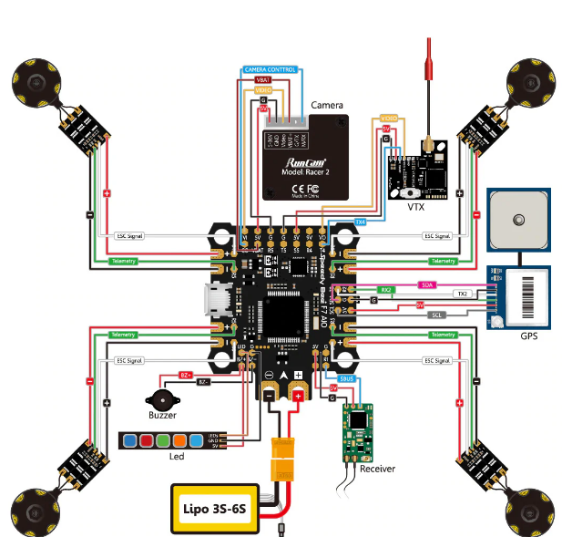

AEM 402/404 Senior Design
ORCA Fixed-Frame eVTOL
Reconnaissance UAV
A fixed-wing eVTOL aircraft designed for runway-independent reconnaissance operations with modular payload integration, autonomous mission capability, and a complete system design flow from CDR to build readiness.
My Role
My strongest contributions were in CAD-heavy integration work, system packaging, technical outreach, and serving as the project pilot.
- Full-airframe CAD iteration and integration alignment
- Geometry decisions for manufacturability and assembly sequencing
- Design review artifacts and team presentations
- Test-readiness activities and mission-oriented framing
Mission & Performance
- Reconnaissance/ISR with modular EO/IR payload
- Cruise target: 17 m/s
- Endurance target: 60 minutes
- VTOL hover: 5-10 minutes with payload
- FAA Part 107 compliant envelope
Configuration
- Fixed-wing with distributed VTOL rotors
- ~1.33-1.40 m wingspan, ~1.0 m length
- Modular nose payload with fast swap
- 3D-printed structure with reinforcement
- Battery-electric propulsion, integrated avionics
CDR Maturity
The CDR baseline reflected a mature, build-ready direction: aerodynamic refinement, propulsion trade convergence, structures validation, and integrated control-transition logic. The architecture was advanced enough to proceed into fabrication with reduced technical risk.
Project Visuals
.png)
.png)
.png)
